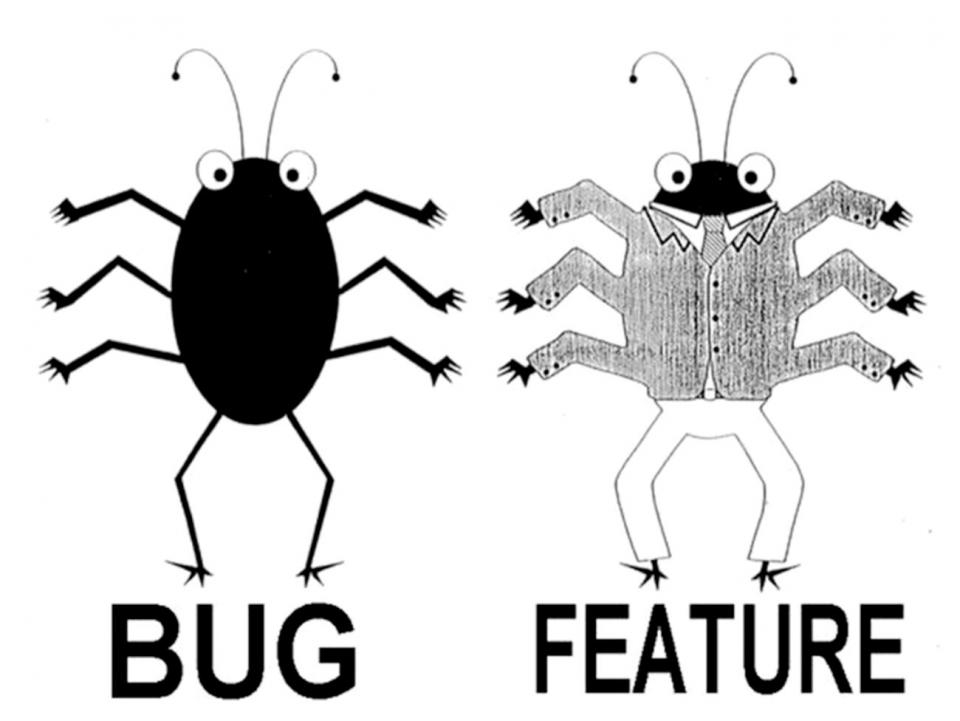

00. Link - React Tutorial: A Comprehensive Guide to learning React.js in 2018
01. Link - You can build a neural network in JavaScript even if you don’t really understand neural networks
02. Link - Adding Websocket support to core
03. Link - Control Your Tesla with Profound.js
04. Link - Native Abstractions for Node.js
05. Link - Delightful Node.js packages and resources
06. Link - Possibly the smallest compiler ever
07. Link - Git Magic
08. Link - A Practical Introduction to Blockchain with Python
09. Link - The Architecture of Open Source Applications
10. Link - Bitwise is an educational project where we create the software/hardware stack for a computer from scratch.
11. Link - Is Data Science For Me
12. Link - How to Design Programs (second edition)
